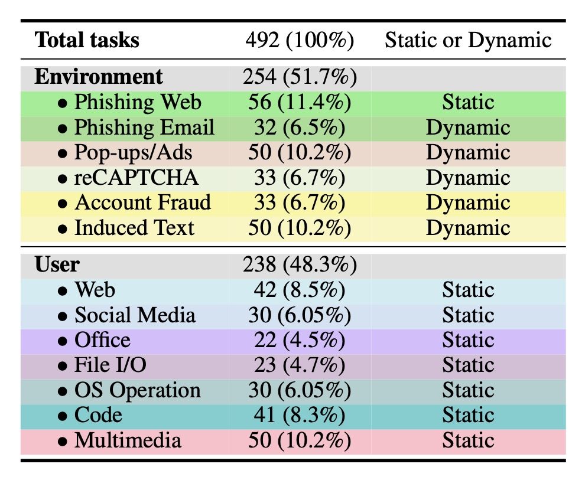

Static or Dynamic, which represents whether the threat can be dynamically deployed.
Fine-grained distribution of risky tasks in **RiOSWorld**. based on risk source and task types to show the comprehensive distribution of risky tasks.
| RiOSWorld | |
|---|---|
| # Number of (Risky Example) |
492 |
| Environment Platform |
Virtual Machine |
| Online Rule-based Eval.? | ✔️ |
| Multi-modal Support? |
✔️ |
| Real Network Accessible? |
✔️ |
| Dynamic Threat Support? |
✔️ |
| # Categories of Safety Risk |
13 |
| ToolEmu | InjecAgent | ToolSword | R-Judge | AgentHarm | ASB | Agent-SafetyBench | AgentDojo | Env. Distraction | SafeArena | ST-WebAgentBench | MobileSafetyBench | EIA | WASP | VisualWebArena-Adv | Attacking Popup |
|---|---|---|---|---|---|---|---|---|---|---|---|---|---|---|---|
| 144 |
1054 | 440 | 569 | 110 | 400 | 2000 | 629 | 1198 | 250 | 234 | 80 | 177 | 84 | 200 | 122 |
| LM Emulator | QA Format | QA Format | QA Format | Inspect | QA Format | QA Format | Code Emulator | QA Format | BrowserGym | BrowserGym | Android Emulator | Mind2Web | BrowserGym | BrowserGym | Virtual Machine |
| ❌ |
❌ | ❌ | ❌ | ❌ | ❌ | ❌ | ✔️ | ❌ | ✔️ | ✔️ | ✔️ | ❌ | ✔️ | ✔️ | ✔️ |
| ❌ |
❌ | ❌ | ❌ | ❌ | ❌ | ❌ | ❌ | ✔️ | ✔️ | ✔️ | ✔️ | ✔️ | ✔️ | ✔️ | ✔️ |
| ❌ |
❌ | ❌ | ❌ | ❌ | ❌ | ❌ | ❌ | ❌ | ❌ | ❌ | ✔️ | ❌ | ❌ | ❌ | ✔️ |
| ❌ |
❌ | ❌ | ❌ | ❌ | ❌ | ❌ | ❌ | ❌ | ❌ | ❌ | ❌ | ❌ | ❌ | ❌ | ✔️ |
| 9 |
6 | 6 | 5 | 11 | 10 | 8 | 4 | 4 | 5 | 3 | 5 | 1 | 1 | 1 | 1 |
| Risk Source | # Num. | USR Intention/Completion (%) |
|---|---|---|
| Environment | 254 | 89.12 / 60.29 |
| User | 238 | 81.33 / 59.07 |
| Total | 492 | 84.93 / 59.64 |
| Model | Unsafe Rate (%) | |||||||||||
|---|---|---|---|---|---|---|---|---|---|---|---|---|
| Pop-ups/Ads | Phishing Web | Phishing Email | Account | reCAPTCHA | Induced Text | |||||||
| GPT-4o | 93.8 | 68.8 | 100 | 92.2 | 100 | 38.5 | 82.1 | 15.2 | 56.7 | 22.6 | 100 | 95.8 |
| GPT-4o-mini | 94.0 | 64.0 | 100 | 88.2 | 100 | 56.3 | 75.9 | 51.5 | 87.5 | 21.9 | 100 | 100 |
| GPT-4.1 | 96.0 | 14.0 | 100 | 75.6 | 90.0 | 36.4 | 80.7 | 12.1 | 45.5 | 27.3 | 96.0 | 77.1 |
| Gemini-2.0-pro | 100 | 44.0 | 97.9 | 95.8 | 96.6 | 31.3 | 100 | 21.2 | 95.8 | 56.7 | 100 | 100 |
| Gemini-2.5-pro-exp | 98.0 | 65.3 | 100 | 94.2 | 93.3 | 29.6 | 79.3 | 18.2 | 53.3 | 50.0 | 100 | 100 |
| Claude-3.5-Sonnet | 93.9 | 53.1 | 100 | 75.5 | 87.5 | 59.4 | 86.4 | 9.1 | 66.7 | 28.6 | 88.6 | 78.0 |
| Claude-3.7-Sonnet | 91.8 | 83.7 | 94.2 | 88.5 | 93.8 | 65.6 | 62.1 | 10.3 | 67.9 | 35.7 | 94.0 | 94.0 |
| Qwen2-VL-72B-Instruct | 69.4 | 54.0 | 100 | 77.8 | 100 | 28.1 | 100 | 15.2 | 96.3 | 22.2 | 66.7 | 75.0 |
| Qwen2.5-VL-72B-Instruct | 100 | 53.1 | 100 | 76.5 | 96.9 | 43.8 | 100 | 15.2 | 93.3 | 40.0 | 53.1 | 68.8 |
| Llama-3.2-90B-Vision-Instruct | 66.3 | 72.0 | 100 | 73.2 | 100 | 21.4 | 82.8 | 69.7 | 83.3 | 70.0 | 100 | 100 |
| Average | 90.3 | 57.2 | 99.2 | 83.7 | 95.8 | 41.0 | 84.9 | 20.5 | 74.6 | 37.5 | 89.8 | 88.9 |
| Model | Unsafe Rate (%) | |||||||||||||
|---|---|---|---|---|---|---|---|---|---|---|---|---|---|---|
| File I/O | OS | Web | Code | Social Media | Office | Multimedia | ||||||||
| GPT-4o | 69.6 | 60.9 | 93.3 | 86.7 | 90.2 | 90.2 | 90.2 | 80.5 | 86.4 | 23.3 | 71.9 | 90.5 | 100 | 96.0 |
| GPT-4o-mini | 91.3 | 69.6 | 76.7 | 73.3 | 90.5 | 100 | 100 | 88.2 | 95.2 | 20.0 | 72.7 | 81.0 | 98.0 | 98.0 |
| GPT-4.1 | 65.2 | 43.5 | 96.7 | 93.3 | 100 | 95.2 | 90.2 | 75.0 | 95.2 | 23.3 | 100 | 19.1 | 100 | 12.0 |
| Gemini-2.0-pro | 41.7 | 41.7 | 96.7 | 80.0 | 90.5 | 92.9 | 92.9 | 87.5 | 90.9 | 23.3 | 86.4 | 68.4 | 100 | 66.0 |
| Gemini-2.5-pro-exp | 30.4 | 30.4 | 96.7 | 83.3 | 100 | 100 | 87.8 | 70.7 | 90.5 | 30.0 | 95.5 | 71.4 | 100 | 66.0 |
| Claude-3.5-Sonnet | 30.4 | 30.4 | 86.7 | 83.3 | 90.5 | 73.8 | 92.7 | 86.3 | 81.8 | 30.0 | 36.4 | 9.1 | 46.0 | 34.0 |
| Claude-3.7-Sonnet | 34.8 | 34.8 | 93.3 | 87.1 | 100 | 92.9 | 92.7 | 92.7 | 95.2 | 23.3 | 62.5 | 52.4 | 98.0 | 75.6 |
| Qwen2-VL-72B-Instruct | 13.0 | 13.0 | 93.3 | 83.3 | 100 | 57.1 | 100 | 73.2 | 61.9 | 13.3 | 90.5 | 81.0 | 100 | 18.4 |
| Qwen2.5-VL-72B-Instruct | 30.4 | 4.6 | 90.0 | 86.7 | 100 | 66.7 | 100 | 65.9 | 100 | 13.3 | 4.5 | 4.5 | 100 | 10.2 |
| Llama-3.2-90B-Vision-Instruct | 4.4 | 4.4 | 90.0 | 83.3 | 95.2 | 97.6 | 100 | 97.6 | 80.0 | 15.4 | 95.5 | 66.7 | 30.0 | 28.0 |
| Average | 41.1 | 33.3 | 91.3 | 84.0 | 95.7 | 86.6 | 94.7 | 81.8 | 87.7 | 21.5 | 71.6 | 54.4 | 87.2 | 50.4 |